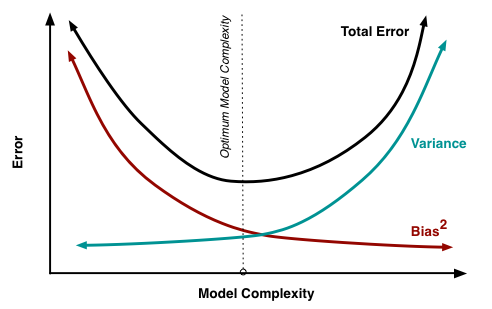

Perspectives
Working - needs graphics, formatting, I SUGGEST DELETING TEXT IN ITALICS
This page:
Models, Models Everywhere

Models are everywhere—sometimes behind the scenes and sometimes right out front. Weather forecasts are models. Measuring the state of the economy is a model. Assessing the condition of a landscape is a model. Forecasting almost anything (a pandemic for example) is a model. Many things we call “measurements” are actually models, such as Site Index, and on and on and on. Even a “map” is a model.

Regardless of their complexity, ALL models are by definition a simplification of reality. Like the model airplane shown above….it “flies” like an airplane but it cannot carry cargo or passengers.
“All models are wrong, so why do we create and use them?” - George Box
We create and use models because (as George Box also said) they can be useful. In fact, Box used the better word “illuminating”. Models can illuminate through prediction or explanation. They can promote understanding and exploration if used properly. Balance and relevance are what can make a model illuminating.

Developers vs Users: Key Considerations
For the model developer, the key is to balance precision and bias of the outputs with the relevance of the model. The goal is to hit your application sweet spot.

Image courtesy: Francesco Pochetti
The model should provide useful information but must also function for the user (i.e. have the right level of complexity). Complexity should have a purpose: to provide more refined information, or in some cases provide the same information with more fidelity. Complex models typically require more input information, are more difficult to develop and de-bug, and take longer to run.
LANDFIRE BpS models, with their limited number of states and transitions, live near the lower end of the complexity scale and provide relatively few and coarser level outputs than some other models, but are also easier to create and use.
Models such as SIMPPLLE and LANDIS II sit nearer the middle or upper end of the complexity scale and can provide more types of outputs but at higher operational cost, sometimes too high a cost.
Understanding the characterstics of the model
- What factors/inputs does it include?
- What factors/inputs does it not include?
- Can you provide the inputs at the level of accuracy required?
- What modeling technique was used?
- How was the model intended to be applied? -What is the “scale” of the model?
Like all tools, models can be used correctly or incorrectly. Can a modified LANDFIRE BpS model provide the information you need with the right level of quality? Only the user can answer those questions, so it is imperative that you review the documentation. Communicate with the modeler if you have questions. It is your responsibility.
## Responsibilites
Models can be useful and even illuminating if used properly. Models can be very harmful, unfortunately very obfuscating if used improperly. It is the modeler’s duty to document the model thoroughly and make that information available to potential users. However, it is the duty of the model user to know what they really need and to review the model and model information to decide for themselves if it is appropriate for their situation or not.
(Does anyone have the picture of Menakis at a RA workshop for instance—this is not the picture I want to use but collaborative review is what I want to show) I found the three below in the archives. Not sure about quality.
Background and recommendations
LANDFIRE Models:
LF Biophysical Settings models were created using a set of strict rules about allowable states (5 or less) and transitions between states (only historic not current). Key considerations:
You are not limited by those rules by the software modeling platform (SyncroSim).
You can add new states and transitions.
You can modify current states or change transition probabilities.
If maintaining compatibility with LANDFIRE models is required, your modification options may be reduced. However, we have seen STSM based on LANDFIRE BpS models that had more than 100 states and dozens of transitions.
LF Biophysical Settings models were developed to reflect the average historical dynamics of an Ecological System across an entire NLCD map zone or set of NLCD Map Zones (see graphic). That is their “scale”, which may or may not be appropriate for you and your work. If your area of interest is significantly larger or smaller that may require adjustments to the model.
insert Map Zone Map
Current Condition Model Guide
(make this a circular graphic?)
Adhere to established modeling standards.
Have a goal and a plan. Don’t just wing it!
Work through the model changes in a stepwise fashion. Add states and associated transitions one at a time and run the model.
Review the results and plan the next steps.
Keep the model as simple as possible. The number of states directly impacts the number of transitions you need and the amount of information you need to support the model. As the model becomes more complicated it becomes more difficult to create, parametrize, understand, modify and utilize appropriately.
Expect the unexpected. If you knew the answer with certainty, you probably did not need the model. An answer that seems strange to you may be correct, and indeed illuminating.